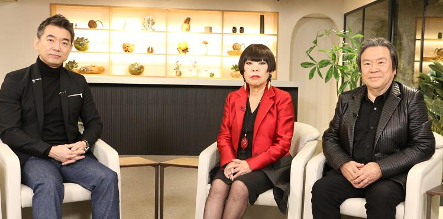
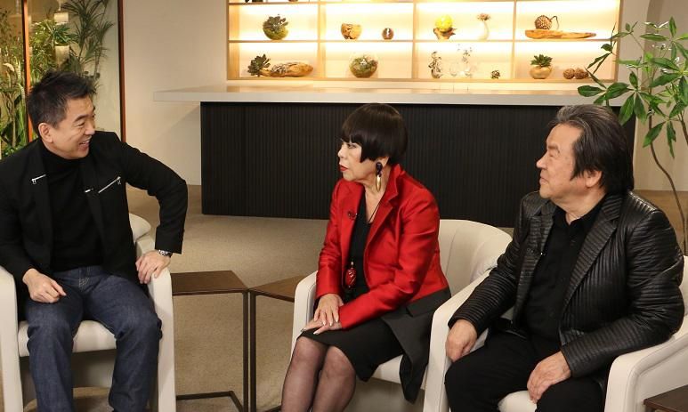

【対談】喜多俊之×コシノジュンコ×橋下徹 長く身を置いた政治行政の世界と、感性が重視されるデザインの世界は対極にあると認識していた橋下氏。 しかし、これまでデザインの恩恵をたくさん受けているはずだと二人は言う。果たしてどうつながっているのだろうか─。
ゲスト 喜多俊之
1942年、大阪府生まれ。1969年よりイタリアと日本でデザインの制作活動を開始。
ゲスト コシノジュンコ
大阪府生まれ。新人デザイナーの登竜門・装苑賞を19歳で受賞。2025年大阪・関西万博の万博誘致特使。1970年の大阪万博を再現したEXPO'70 パビリオン。コシノ氏は当時３つのパビリオンのコンパニオンの衣装デザインを手がけた。
長く身を置いた政治行政の世界と、感性が重視されるデザインの世界は対極にあると認識していた橋下氏。
しかし、これまでデザインの恩恵をたくさん受けているはずだと二人は言う。果たしてどうつながっているのだろうか──。

橋下徹（以下、橋下）
今日は大阪のご出身で世界を代表するデザイナーのお二人、コシノジュンコさんと喜多俊之さんをお迎えしました。コシノさんは岸和田生まれだそうですね。コシノさんの華やかなデザインと岸和田は、若干ミスマッチのような気もするんですが。
コシノジュンコ（以下、コシノ）
いやいや、私、高校２年までだんじりを引いてましたから（笑）。岸和田の街の勢いそのままで、これまでデザイナーとして生きてきました。
橋下
岸和田から世界の巨匠になられたコシノさんは、２００６年に「イタリア連帯の星・カヴァリエーレ章」を受勲されてますね。
コシノ
あれはプッチーニのオペラ、マダム・バタフライの衣装をデザインしたのが評価されました。私がやる前の衣装デザインが、日本に対する勘違いがあって、そのまま日本で上演したら問題になりそうだったんですね。
喜多俊之（以下、喜多）
外国人から見た日本のイメージって、だいぶ偏っていますからね。
橋下
喜多さんは液晶テレビ・アクオス亀山モデルのデザインが有名ですが、イタリアの高級ソファ、カッシーナも手がけられていますね。
喜多
もう40年になります。
橋下
うちのリビングにもあるんです。子どもが汚したので、布地を一度張り替えていますが、とても気に入ってます。カッシーナのお仕事はどんなきっかけで始まったんですか？
喜多
イタリアに行って10年目に、先方から「イタリアらしくないデザインを考えてほしい」とオファーがあったんです。「ウインク」というシリーズのデザインは３年ぐらいかけて粘土をこねて、形作りました。
コシノ
ミラノの街角のショップで、喜多さんがデザインしたソファを見たときはびっくりしました。日本のデザイナーが本場のイタリアで活躍する道を、喜多さんが開拓してくれましたね。
橋下
僕はイタリア車のデザインが好きなんですが、見かけはすごくカッコいいのにドアが開けにくかったり、実用性はあまりない印象があるんです。自宅で買ったイタリア製の机も三本脚で素敵なんですが、バランスが悪くて倒れちゃうんですよね。
喜多
それは何年前に買ったものですか？
橋下
10年ぐらい前ですね。
喜多
最近はイタリアも実用性を重視しているので、そういうプロダクトはないですね。いいデザインは使いやすいから、売れるんです。
橋下
なるほど。僕が今日着ているジャケットはコシノさんのデザインです。すごく素敵で気に入っているんですが、パリコレで歩くスーパーモデルの服って相当奇抜で、「こんなん、街で着られんわ」というデザインですよね。あれはどうしてなんでしょうか？
コシノ
ふつうに街を歩く人が着られるものを見ても、面白くないでしょ。みんなが着ているセーターとジーパンでモデルが出てきても、意味がありません。それに、着られるというだけで洋服はすでに十分機能的なんです。
橋下
なるほど。一見奇抜に見えるパリコレのデザインが、市井の服に影響を与えるんでしょうね。僕がずっと生きてきた政治行政の世界って、すべてファクトと理屈で動いていますが、デザインは感性の世界でしょう。だからずっと対極のイメージを持っていたんです。お二人のようなデザインの感性は、どこから生まれてくるんですか？
喜多
あまり難しく考えず、プロダクトデザインでは「これを使ったら自分はどう感じるかな」という発想からスタートしますね。橋下さんも意識してなかっただけで、これまでの人生でデザインの恩恵をたくさん受けているはずですから、ちょっと注意して見るだけでデザインセンスが磨かれますよ。
コシノ
デザインは「足し算」より「引き算」が大事なんです。余計なものをごちゃごちゃ足さず、本質的に大切なものだけを整理して残す。そのバランス感覚こそが、デザインセンスだと思います。いま橋下さんが着ている黒いジャケットだったら、いかにきれいにファスナーのシルバーを見せるかがポイント。もし花柄とかを入れたら、バランスが壊れちゃいますね。
■日本人とイタリア人 デザイン性が違う理由

喜多
コップでも家電製品でも機能と同時に、それを作るコストや、安全面などの配慮もします。日常の生活で使われるシーンをとことん考えて、造形の美しさなどの味付けは、最後に加えるようにしています。
橋下
勉強になります。僕のような素人でも、イタリア家具のデザインのよさはわかりますが、いったいイタリア人の何が優れているんでしょうか。
喜多
それは彼らが家庭を大切にするからだと思います。イタリアでは田舎の農村の家でも、インテリア雑誌に出てくるような部屋で暮らしているんです。あの国では、日常的に友達を呼んで、食事をしながら会話を楽しむんですね。いつ来客があってもいいように、お母さんたちは子どもが小さいときから掃除の仕方を丁寧に教えますし、暮らしの中で美意識が磨かれる土壌があるんです。家が人生の舞台なんですよね。
コシノ
ヨーロッパは石造りの５００年前に建てられた家が街のあちこちにあって、その中でモダンな生活をしてますよね。歴史に裏打ちされたセンスの集積が、自然に生活に溶け込んでいる。日本も昔の家屋は、お客さんが来たら部屋のふすまを取り払って、もてなす文化があったでしょ。いまはコンクリートのマンションに暮らす人が増えて、お客さんを迎えることが少なくなった。それがセンスに影響を与えている気がしますね。
橋下
すると美的センスを磨くには、家に人を呼ぶのがいいわけですね。
コシノ
すごく大事だと思います。日本は鎖国の時代が長く続き、その間どこからも影響を受けず独自にデザインを発展させましたよね。それが最近の多くの人は、生活の場がチープなものだけに囲まれてもへっちゃらになっている。チープなものがすべて悪いわけではありませんが、バランスが偏っている感じがします。
喜多
明治以降の日本のデザインは、刺し身包丁とか服の布地へのこだわりとか、小さなものを極めていく方向に向かったんです。いわゆる職人技を極めていって、その結果すばらしいものが生まれたけれど、現在日本の伝統工芸はどんどん縮小しています。それは私たちが、日常の暮らしを大切にする精神を失っていったからだと思うんですね。多くの人が日々の生活に目を向けるようになれば、再び日本のデザインは活力を取り戻すと思います。そのためにはイタリアのように家に人が集い、語り合うことが必要なんです。
■次の大阪万博で 示すべき精神とは
橋下
25年の大阪・関西万博（以下、大阪万博）の招致活動にもコシノさんにはご協力いただきました。１９７０年の大阪万博でも、コシノさんはユニフォームを手がけられているんですよね。
コシノ
まだ私も20代で「少女デザイナー」と呼ばれていた頃です（笑）。生活産業館、ペプシコーラ館、タカラ・ビューティリオンの３つのパビリオンのユニフォームを手がけましたが、仕事が来たきっかけは個人的なつながりです。クリエイターが集まる新宿のパブがあって、そこに来ていた黒川紀章さんから、「やってみない？」と声を掛けられたんです。政治的な何かじゃなくて、顔見知り同士の個人の関係で決まった話ですね。ユニフォームはパビリオンの「動くイメージ」だからと、がんばりました。
喜多
当時は高度経済成長期の真っ只中ですから、企業に勢いがありましたね。企業パビリオンもものすごく立派で、国のパビリオンと遜色なかった。いいデザインが生まれる国には、コシノさんのパブのように、最先端の文化を切り開いている人々が集まっている場が必ずあるんですよ。ミラノやパリ、ニューヨークにはいつの時代もそうした場が何カ所かあって、人が会い、話し合っています。そこから文化が生まれていくんです。
橋下
次の大阪万博について、デザイナーの観点からアドバイスはありますか？
コシノ
日本は伝統的に、部分的な細部のデザインは上手にできるけれど、都市計画のような大きなもの全体のデザインに慣れていない。万博は一つの都市をつくり上げるようなものだから、トータルに考え抜いたデザインが求められると思います。
橋下
今度の大阪万博は「中心をつくらない」というコンセプトらしいです。亀の甲羅の模様のように、どこまでも無限に広がっていくイメージで会場を設計すると聞いています。
喜多
近年は日本中の都道府県がデザインに注目するようになりました。日本政府も18年に「デザイン経営宣言」というのを打ち出し、デザインの力で振興しようとしています。万博もテクノロジーを打ち出すだけでなく、この国の自然と精神が調和したデザインの力を見せる場になるといいですね。
※「みんなのJAPAN MOVE」を再構成（プレジデント社 PRESIDENTより抜粋）
▼【公式メールマガジン＆公式オンラインサロン 】へのご入会はこちらから！